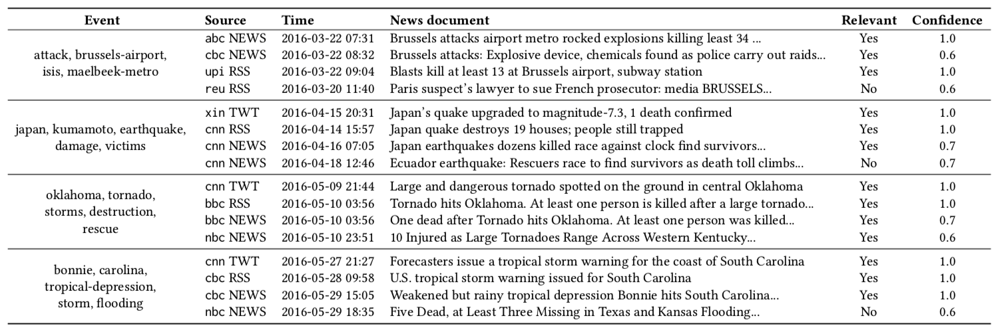

We provide a collection of news documents labeled at the level of crisp events. How to get the dataset?
The collection spans 4 months (from March 1 to June 30, 2016) and comprises around 147K news documents from 9 popular news channels and published on 3 different online platforms: Twitter, RSS portals, and news websites.
More statistics about the collection are reported in the following table:
Given a subset of 57 events, we provide relevance labels of news documents for a total of about 4.3K labeled {event, news} pairs. The relevance judgments were collected using a crowdsourcing platform.
Examples of events with news documents and their relevance are reported in the follwoing table:

More details about the collection are available in our short paper published at ICTIR 2019.
We collected 24,156 news articles. The format of this file is as follows: document_identifier \t timestamp \t content
where the document_identifier is: {RANDOM_ID}@{PLATFORM}_{CHANNEL} (e.g.,57948@NEWS_abcnews), the timestamp is in the form YYYY-MM-DD hh:mm:ss, and the content was preprocessed.
We collected 43,380 RSS news feeds. The format of this file is as follows: document_identifier \t timestamp \t content
where the document_identifier is: {RANDOM_ID}@{PLATFORM}_{CHANNEL} (e.g.,613@RSS_abcnews), the timestamp is in the form YYYY-MM-DD hh:mm:ss, and the content was preprocessed.
We collected 80,134 tweets. For copyright reason we do not provide the text of tweets, but we provide their ids. The format of the this file is as follows: document_identifier \t timestamp
where the document_identifier is: {TWEET_ID}@{PLATFORM}_{CHANNEL} (e.g.,704456822321623040@TWT_abcnews) and the timestamp is in the form YYYY-MM-DD hh:mm:ss.
For a subset of the news documents, we provide event-relevance labels. Overall, we gathered labels for 4,307 {event, news} pairs using the CrowdFlower crowdsourcing platforms.
The format of the this file is as follows: document_identifier \t event_keywords \t label (yes or no) \t contributor_confidence (a value from 0.0 to 1.0)